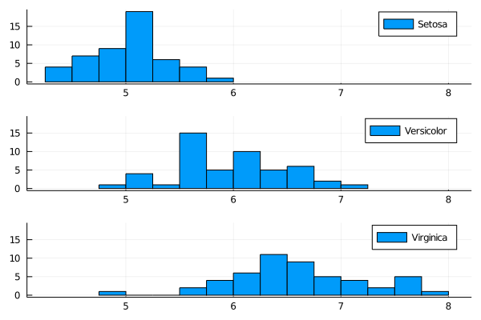

Big Data
OnlineStats + CSV
The CSV package offers a very memory-efficient way of iterating through the rows of a (possibly larger-than-memory) CSV file.
Example
Here is a toy example (Iris dataset) of how to iterate through the rows of a CSV file one-by-one and calculate histograms grouped by another variable.
using OnlineStats, CSV, Plots
url = "https://gist.githubusercontent.com/joshday/df7bdaa1d58b398592e7656395de6335/raw/5a1c83f498f8ca7e25ff2372340e44b3389be9b1/iris.csv"
rows = CSV.Rows(download(url); allowmissing=:none)
o = GroupBy(String, Group([Hist(0:.2:8) for _ in 1:4]...))
vars = [:sepal_length, :sepal_width, :petal_length, :petal_width]
for row in rows
x = map(x -> parse(Float64, getproperty(row, x)), vars)
fit!(o, (row.variety, x))
end
plot(o["Versicolor"], label=permutedims(vars), xlim=(0,8))
## Distributed Parallelism
`OnlineStat`s can be merged together to facilitate [Embarassingly parallel](https://en.wikipedia.org/wiki/Embarrassingly_parallel) computations. For example, merging in **OnlineStats** is used under the hood by [**JuliaDB**](https://github.com/JuliaComputing/JuliaDB.jl) to run analytics in parallel.
!!! note
In general, `fit!` is a cheaper operation than `merge!`.
!!! warn
Not every `OnlineStat` can be merged. In these cases, **OnlineStats** either uses an
approximation or provides a warning that no merging occurred.
### Examples
#### Simplified (Not Actually in Parallel)
julia y1 = randn(10000) y2 = randn(10000) y3 = randn(10_000)
s1 = Series(Mean(), Variance(), KHist(20)) s2 = Series(Mean(), Variance(), KHist(20)) s3 = Series(Mean(), Variance(), KHist(20))
fit!(s1, y1) fit!(s2, y2) fit!(s3, y3)
merge!(s1, s2) # merge information from s2 into s1 merge!(s1, s3) # merge information from s3 into s1
#### In Parallel
julia using Distributed addprocs(3) @everywhere using OnlineStats
s = @distributed merge for i in 1:3 o = Series(Mean(), Variance(), KHist(20)) fit!(o, randn(10_000)) end
@raw html <img src = "https://user-images.githubusercontent.com/8075494/57345083-95079780-7117-11e9-81bf-71b0469f04c7.png" style="width:400px"> ```